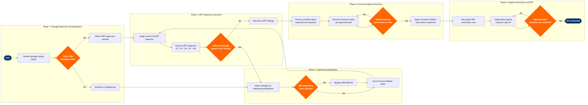

Structural Repair & NDT Management
Maintenance, Repair & Overhaul › Heavy Maintenance · 19 L4 steps · 5 phases · 4 decision gates · Updated 2026-10-01 20:52
📊
Process Flow Diagram (BPMN)

📋
L4 Process Steps
| Step | Step Name | Role / Swim Lane | System | Input | Output | KPI | Dec? | Exc? |
|---|---|---|---|---|---|---|---|---|
Phase 1 1.1 |
Initiate structural damage finding report | Aircraft Structures Inspector | AMOS by Swiss AviationSoftware | Visual inspection finding, C-check opening discrepancy, or SRM-triggered inspection requirement | Damage Finding Report (DFR) with location, area, and initial severity classification | DFR opened within 2 hours of discovery; 100% of findings logged before repair initiation | N | N |
| 1.2 | Define NDT method and inspection scope | NDT Level III Engineer | Boeing Toolbox / CAMP | Damage Finding Report, Aircraft Structural Repair Manual (SRM) Chapter 51, airframe area access card | NDT Work Instruction specifying method (UT, ET, RT, PT, MT), zone boundary, and acceptance criteria | NDT scope defined within 4 hours of DFR; SRM chapter referenced on 100% of instructions | N | N |
| 1.3 | Evaluate damage against SRM allowable limits | Structures Engineer | AMOS by Swiss AviationSoftware | NDT Work Instruction, SRM allowable damage limits, measured damage dimensions | Disposition decision: within limits (proceed to NDT), beyond limits (escalate to engineering) | Disposition decision issued within 8 hours of DFR for non-AOG; 100% of beyond-limit findings escalated same shift | Y | N |
Phase 2 2.1 |
Submit damage for engineering disposition review | Structures Engineer | AMOS by Swiss AviationSoftware | Beyond-limits damage finding, DFR with measurements, photographs, and SRM chapter reference | Engineering Disposition Request (EDR) submitted to Structures Engineering queue | EDR submitted within 2 hours of beyond-limits determination; completeness score ≥95% (all required fields populated) | N | N |
| 2.2 | Evaluate repair options against approved engineering data | Structures Engineering DER | Boeing Toolbox / CAMP | Engineering Disposition Request, SRM Chapter 51/53/57, applicable Airworthiness Directives (ADs), fleet history for recurring damage patterns | Repair scheme selection: SRM standard repair, SRM alternative repair, or DER-designed repair | Engineering disposition issued within 24 hours for non-AOG; 100% of dispositions reference specific SRM paragraph or approved data source | N | Y |
| 2.3 | Determine if OEM or DER engineering order is required | Structures Engineering DER | AMOS by Swiss AviationSoftware | Repair scheme assessment, FAA DER authority scope, airline DER/ODA delegation matrix | Decision: issue in-house Structural Repair Order (SRO) or submit to Boeing/OEM for Engineering Order (EO) | OEM referral decision made within 4 hours of disposition review; 0 instances of in-house repair where OEM EO was required by AD or AWL | Y | N |
| 2.4 | Issue Structural Repair Order and material requirements | Structures Engineering DER | AMOS by Swiss AviationSoftware | Approved repair scheme (SRM, in-house EO, or OEM EO), DFR, parts availability from stores | Structural Repair Order (SRO) with step-by-step instructions, material list (alloys, fasteners, sealants), tooling requirements, and inspector hold points | SRO issued within 2 hours of disposition approval; material list completeness ≥98% (no unplanned AOG parts requests during repair) | N | N |
Phase 3 3.1 |
Assign certified NDT Level II/III inspector to task | NDT Supervisor | AMOS by Swiss AviationSoftware | NDT Work Instruction, inspector qualification matrix (NAS410 / EN4179 certifications), shift roster | Inspector assignment confirmed; qualification verified against required NDT method and aircraft type | Inspector assigned within 1 hour of work instruction release; 100% of assignments verified against NAS410 certification currency | N | Y |
| 3.2 | Execute NDT inspection per approved work instruction | NDT Level II Inspector | Olympus OmniScan (UT/PAUT) integrated with AMOS by Swiss AviationSoftware | NDT Work Instruction, calibration standards, aircraft access (panels removed, surface prepared), ambient condition log (temperature, humidity) | Raw NDT data file, calibration record, inspection coverage map, preliminary indication report | Coverage rate ≥100% of defined zone (no uninspected area); calibration performed every 4 hours or per shift change; scan data archived within 30 minutes of inspection completion | N | N |
| 3.3 | Assess NDT findings against work instruction acceptance criteria | NDT Level III Engineer | AMOS by Swiss AviationSoftware | NDT indication report, acceptance criteria from SRM or EO, prior repair history at location | Accept / reject determination; if additional damage found beyond initial scope, updated DFR issued | Level III review completed within 4 hours of inspection; 0 indications accepted beyond SRM limits without engineering sign-off | Y | Y |
| 3.4 | Archive NDT findings and close NDT work card | NDT Level II Inspector | AMOS by Swiss AviationSoftware | Accepted NDT indication report, calibration records, coverage maps, inspector sign-off | Closed NDT work card with digital signature; scan data archived to aircraft records in AMOS | Work card closed within 2 hours of Level III acceptance; 100% of scan data files attached to aircraft serial number record | N | N |
Phase 4 4.1 |
Procure certified repair materials and special fasteners | Stores / Material Planning Analyst | SAP S/4HANA Finance (FI/CO) integrated with AMOS by Swiss AviationSoftware | Structural Repair Order material list, stores inventory status, certified material certifications (Mill Certs, C of C) | Issued materials kitted and delivered to work stand; material traceability records (batch numbers, C of C) linked to SRO in AMOS | Material kitting completed within 4 hours of SRO release for planned repairs; 100% of issued materials have traceable Certificate of Conformance | N | Y |
| 4.2 | Execute structural repair per approved Structural Repair Order | Airframe Structures Mechanic (A&P) | AMOS by Swiss AviationSoftware | Structural Repair Order, approved engineering data (SRM/EO), issued materials, calibrated tooling (torque wrenches, drill jigs) | Completed repair with installed doublers/patches/fasteners per SRO specifications | Repair step completion sign-off within SRO-defined sequence; 0 out-of-sequence step completions; fastener installation torque within ±10% of SRM specification | N | N |
| 4.3 | Verify repair dimensions and load path restoration | Structures Inspector (Inspection Hold Point) | AMOS by Swiss AviationSoftware | Completed repair assembly, SRO dimensional tolerances, engineering drawing, calibrated measurement tools | Dimensional check record; pass/fail determination; rework instruction issued if out of tolerance | 100% of SRO-defined hold points signed before next step begins; dimensional non-conformance rate <2% of structural repair work orders | Y | Y |
| 4.4 | Apply corrosion inhibitor and sealant compound | Airframe Structures Mechanic (A&P) | AMOS by Swiss AviationSoftware | Approved repair with completed dimensional check, SRM-specified sealant (PR-1422, EC-776), surface preparation requirements | Sealed repair with corrosion protection applied; sealant cure time logged; area prepared for final NDT verification | Sealant applied within 30 minutes of surface preparation (ASTM D1002 open-time limit); cure time logged per batch number; 100% coverage of faying surfaces per SRM specification | N | N |
Phase 5 5.1 |
Perform post-repair NDT verification scan | NDT Level II Inspector | Olympus OmniScan (UT/PAUT) integrated with AMOS by Swiss AviationSoftware | Completed sealed repair, post-repair NDT Work Instruction, original pre-repair baseline scan data for comparison | Post-repair NDT report confirming no sub-surface anomalies, fastener hole integrity, and bondline continuity | Post-repair scan coverage ≥100% of repair footprint + 25mm margin; indication-free result confirmed on 100% of primary structural repairs before inspector sign-off | N | N |
| 5.2 | Quality inspector independent review and dual sign-off | Quality Assurance Inspector (Independent) | AMOS by Swiss AviationSoftware | Completed SRO work card, NDT pre- and post-repair reports, material traceability records, dimensional check records, engineering EO or SRM reference | Quality release stamp on SRO; airworthiness release authorisation issued or corrective action required | Independent QA review completed within 4 hours of last work card sign-off; QA deficiency rate <1% of released structural repair work orders | N | Y |
| 5.3 | Verify documentation completeness and regulatory compliance | Quality Assurance Supervisor | AMOS by Swiss AviationSoftware | Closed SRO with all work cards, NDT reports, material certs, dimensional records, engineer EO sign-off, QA release stamp | Documentation compliance check result; return to service approval issued or documentation deficiency log created for correction | Documentation review completed within 2 hours of QA release; 0 aircraft released to service with open documentation deficiencies | N | Y |
| 5.4 | Update airworthiness records and issue RTS authorisation | Quality Assurance Supervisor / DMIR | AMOS by Swiss AviationSoftware | Approved documentation package, recurring inspection task creation confirmation (if AWL-driven), aircraft maintenance record | Aircraft maintenance record updated; Structural Repair Register entry created; FAA Form 337 (if DER repair) filed; Return to Service (RTS) authorisation signed | RTS issued within 1 hour of documentation approval; 100% of DER repairs accompanied by filed FAA Form 337 within 8 hours of RTS; AWL recurring tasks created and confirmed in AMOS for 100% of limit-item repairs | N | N |
📋